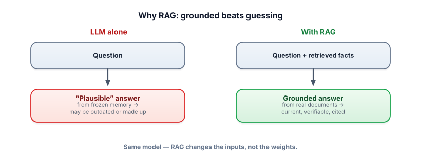
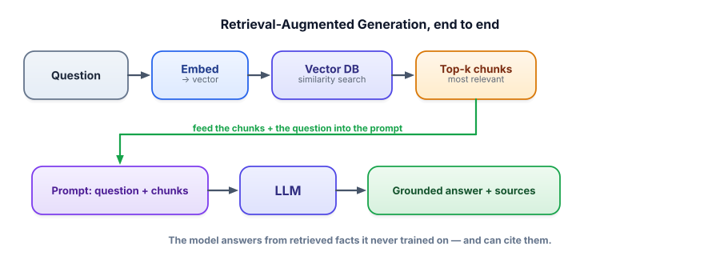

Why RAG exists
This is the technique that turns a general-purpose model into your expert — answering from your documents, your policies, today’s data — with citations you can check. It’s the single most common architecture in production GenAI, and it’s built entirely from things you already understand.
The problem RAG solves
From Track 1 you know three hard limits of a bare LLM: it has a knowledge cutoff, it can’t see your private data, and when it doesn’t know something it hallucinates a confident guess. So how do you build a support bot that answers from your help docs, or an assistant that knows this week’s numbers? You can’t retrain the model for every change, and you can’t fit a 500-page manual into one prompt. The answer is to stop relying on the model’s memory and instead fetch the relevant facts and hand them to the model at question time.

Retrieval-Augmented Generation (RAG) is a pattern where, for each query, you retrieve the most relevant pieces of text from a knowledge source and put them in the prompt, so the model generates its answer grounded in those pieces. The collection of source text is your knowledge base. Grounding means the answer is based on supplied evidence rather than the model’s memory. Retrieval is the act of finding the relevant pieces — which, as you’ll see, is just the embedding similarity from Track 1.3 at scale.
How it works, at a glance
The whole pattern is one loop: turn the question into a vector, find the nearest chunks in a vector store, paste them into the prompt, and let the model answer from them.

This is a complete, runnable RAG system using a free embedding model and a free local LLM. We’ll reuse and grow it across the track.
!pip install sentence-transformers numpy ollama
import numpy as np, ollama
from sentence_transformers import SentenceTransformer
embed = SentenceTransformer("all-MiniLM-L6-v2") # free, 384-dim
# 1) knowledge base — your chunks of text
docs = [
"The X200 blender has a 3-year limited warranty.",
"Returns are free within 30 days of delivery.",
"The X200 motor is rated at 1200 watts.",
]
D = embed.encode(docs, normalize_embeddings=True) # pre-embed once
def retrieve(q, k=2):
qv = embed.encode([q], normalize_embeddings=True)[0]
scores = D @ qv # cosine (vectors are unit-length)
top = scores.argsort()[::-1][:k] # highest first
return [docs[i] for i in top]
def rag(q):
chunks = retrieve(q)
context = "\n".join(f"[{i+1}] {c}" for i, c in enumerate(chunks))
prompt = ("Answer ONLY from the context. Cite as [n]. "
"If the answer isn't there, say you don't know.\n\n"
f"Context:\n{context}\n\nQuestion: {q}")
return ollama.chat(model="llama3.2",
messages=[{"role": "user", "content": prompt}])["message"]["content"]
print(rag("How long is the warranty?")) # -> "The warranty is 3 years [1]."That’s genuinely it — retrieval is one matrix multiply (cosine), generation is one grounded prompt. Everything else in this track makes these two steps robust at real scale.
When to use RAG (and when not to)
RAG is the right tool when you need a model to use knowledge that is large, changing, private, or must be cited. But it’s one of three ways to give a model knowledge, and a senior engineer picks deliberately:
| Approach | Best for | Watch out |
|---|---|---|
| Long context (paste it all in) | A handful of small docs that fit comfortably in the window | Cost, latency, “lost in the middle” at scale (Track 1.4) |
| RAG (retrieve, then generate) | Large/changing/private knowledge; you want citations | Quality is capped by retrieval quality (Lesson 3.8) |
| Fine-tuning (train the weights) | Durable behavior, format, or style — not fast-changing facts | Costly to update; wrong tool for fresh knowledge (Track 5) |
RAG is for knowledge; fine-tuning is for behavior. If the question is “how do I make it know X?”, reach for RAG. If it’s “how do I make it act like X?”, consider fine-tuning. Most “make it answer about our docs” problems are RAG.
- RAG fixes the LLM’s cutoff/private-data/hallucination limits by supplying relevant facts at query time.
- The loop: embed the query → retrieve nearest chunks → put them in the prompt → generate grounded.
- It changes the input, not the weights — so updating knowledge is just re-indexing.
- Choose among long-context, RAG, and fine-tuning: RAG for large/changing/private/cited knowledge.
- RAG’s ceiling is retrieval quality — if the right chunk isn’t fetched, the answer can’t be right.
Your company’s product catalog changes weekly. You need a bot that answers questions about current products, with sources. Best approach?
What core problem does RAG solve that a bigger model alone doesn't?
1. Run the “hello world” RAG above, then ask it “What’s the motor wattage?” and “Do you ship to Mars?” What should each return, and why?
2. For each, pick long-context / RAG / fine-tune: (a) answer from a 2-paragraph email, (b) answer from 10,000 support articles, (c) always reply in your brand’s quirky voice.
3. Explain why RAG can cite sources but a bare LLM fundamentally cannot.
▸ Show solutions & reasoning
1. “Motor wattage” retrieves chunk [3] and answers “1200 watts [3].” “Ship to Mars?” retrieves the nearest chunks, but none contain shipping-to-Mars info, so a well-grounded model says “I don’t know” (because you told it to abstain when the answer isn’t in context). That contrast — confident when grounded, honest when not — is the whole value of RAG.
2. (a) long context — it’s tiny, just paste it. (b) RAG — far too much to paste; retrieve the relevant few. (c) fine-tune — that’s a durable behavior/style, not knowledge, so train it in (or a strong system prompt for a lighter touch).
3. Citations require knowing where a fact came from. A bare LLM generates facts from diffuse patterns in its weights — there’s no source to point to, so any “citation” it offers is itself generated (and often fake). RAG retrieves specific, identifiable chunks, so the system knows exactly which document each fact came from and can attach a real reference. Provenance comes from retrieval, not generation.
The seductive thing about RAG is how simple the core is — embed, search, stuff, generate. The reason it’s a discipline is that quality lives in the unglamorous parts around the model. Your answer can only be as good as the chunk you retrieved, which depends on how you split documents (Lesson 3.2), which embedding model you chose (3.3), how your index trades speed for accuracy (3.4), whether you rerank (3.5) or blend keyword and semantic search (3.6), and how strictly you ground and cite (3.7). And you won’t know any of it is working without measuring retrieval and answer quality (3.8). That’s the whole track.
A useful way to hold it: RAG moves the hard problem from “does the model know?” to “can I find the right text?” — and finding the right text is a search-and-data problem you can engineer, test, and improve incrementally. That’s a much better place to stand than hoping a model memorized your docs. The model becomes a reliable reasoner over evidence you control, which is exactly the relationship you want with a system that’s brilliant but an unreliable witness.
The first lever on retrieval quality is how you cut your documents into pieces. Get this wrong and nothing downstream can save you. Next: chunking strategies.